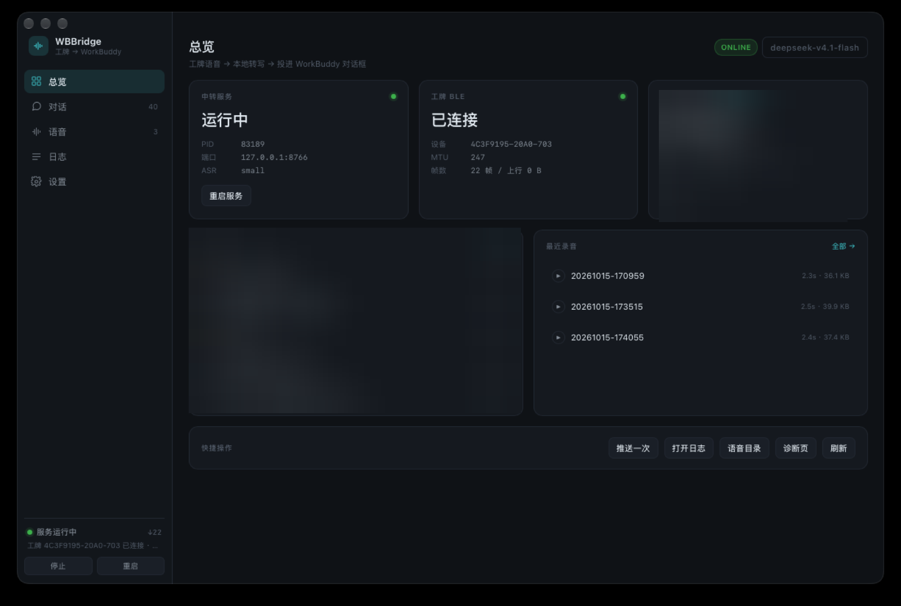

AI Passport 工牌 → 本机中转 → WorkBuddy
蓝牙收语音 / 发控制帧，本机 ASR 转写后投递进 WorkBuddy 会话；主窗口是本机 127.0.0.1 上的一套控制台
BUSY
BLE 82%
RUNNING
使用五个楼层表开工
deepseek-v4.1-flash
ELAPSED
12:47
CREDITS
12.4 / 30.0
OK List UP Light DOWN Refresh
UP
DOWN
OK
BUSY
工牌只做三件事：报状态、收语音、放结果
ESP32-C3
· 8MB Flash · BLE 5 · 无 PSRAM
240×320
ST7789P3 · ES8311 音频 · 3 键
520mAh
· 60×95×8.5mm · 约 50g
WBBridge · 工牌中转 · 127.0.0.1

服务在跑 · 工牌已连（MTU 247）· 8766 端口
工牌
—BLE 5→
WBBridge.app
—HTTP 127.0.0.1→
/ui 控制台
—reply→
WorkBuddy 会话